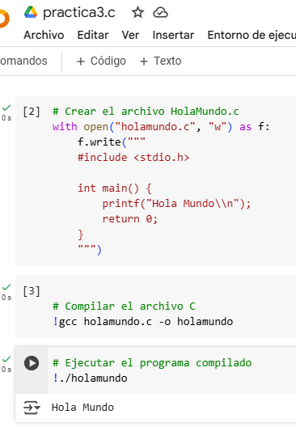

Portabilidad: El código escrito en C se puede ejecutar en diferentes plataformas sin cambios significativos.
Eficiencia: C es rápido y eficiente, y permite escribir código de bajo nivel.
Control y flexibilidad: C ofrece un alto nivel de control sobre el hardware y la memoria.
Biblioteca estándar: C proporciona una amplia gama de funciones para tareas comunes.
Modularidad: C permite la programación modular.
Tipo estático: C es un lenguaje de tipo estático.
Lenguaje de propósito general: C es un lenguaje de propósito general.
Amplio conjunto de operadores integrados: C tiene un amplio conjunto de operadores integrados.
Bibliotecas con funciones enriquecidas: C tiene bibliotecas con funciones enriquecidas.
Fácil de extender: C es fácil de extender.
Tipos de datos
Tipos de datos en C:
Los tipos de datos en el lenguaje C se clasifican en categorías generales. Algunos de los tipos de datos básicos son:
int: Define números enteros.
char: Define letras o caracteres.
float: Define números reales o en coma flotante.
double: Define números reales o en coma flotante.
void: Un tipo básico de C.
Ventajas y desventajas
Ventajas del lenguaje C:
Alto rendimiento: C es un lenguaje compilado que permite un control directo sobre el hardware y la memoria, lo que resulta en una ejecución rápida y eficiente.
Portabilidad: El código en C puede ser fácilmente portado entre diferentes sistemas operativos y plataformas, siempre que haya un compilador disponible.
Control de bajo nivel: C proporciona acceso directo a la memoria a través de punteros, lo que da un control completo sobre los recursos del sistema.
Lenguaje de propósito general: C se usa para una amplia variedad de aplicaciones, desde sistemas operativos hasta aplicaciones embebidas y juegos.
Popularidad y soporte: Es uno de los lenguajes más utilizados y tiene una gran comunidad de desarrolladores, lo que garantiza una amplia documentación y recursos.
Base para otros lenguajes: Muchos otros lenguajes de programación modernos, como C++, Java, y Python, tienen su origen en C o se basan en sus conceptos.
Desventajas del lenguaje C:
Gestión manual de memoria: C no tiene recolección de basura, lo que significa que los programadores deben gestionar manualmente la memoria, lo que puede dar lugar a errores como fugas de memoria y corrupción de datos.
Complejidad en la sintaxis: Aunque es más simple que algunos lenguajes, su sintaxis puede ser difícil de entender, especialmente cuando se usan punteros y estructuras de datos complejas.
Falta de abstracción: C está más cerca del hardware, lo que puede hacer que el desarrollo sea más tedioso, ya que no ofrece tantas abstracciones o características como lenguajes más modernos (por ejemplo, manejo automático de memoria).
Errores difíciles de depurar: Los errores en C, como los errores de punteros o desbordamientos de búfer, pueden ser difíciles de rastrear y depurar.
No tiene orientación a objetos: Aunque se pueden implementar algunos conceptos de programación orientada a objetos, C no es un lenguaje orientado a objetos nativo como C++ o Java.
Impresion de hola mundo (ejemplo)

Codigo
#include
int main() {
printf("Hola Mundo\n");
return 0;
}